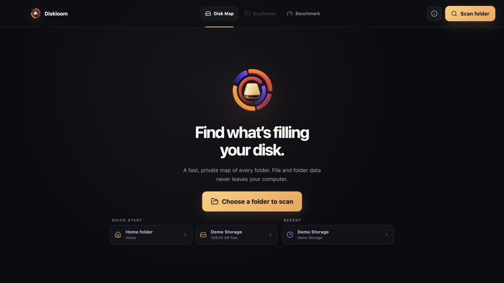
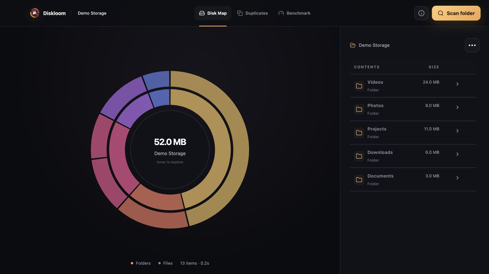
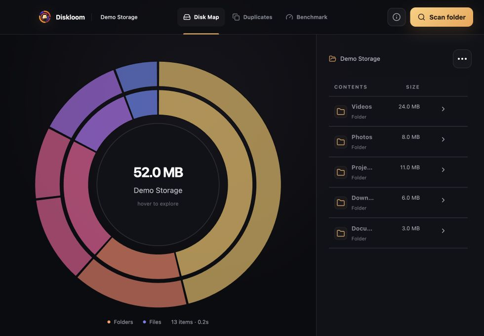
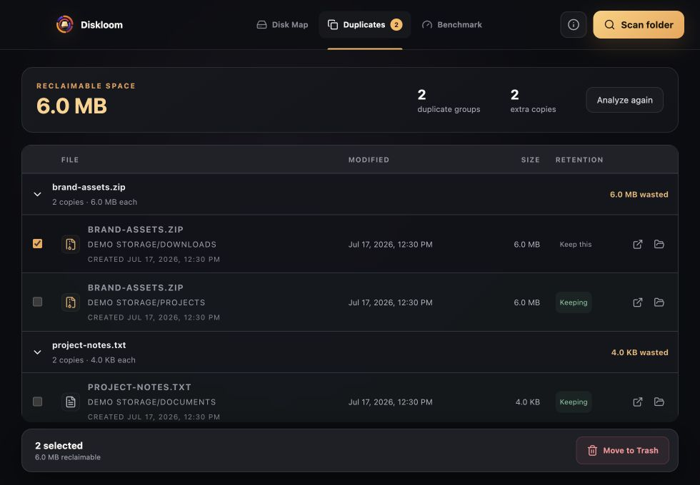
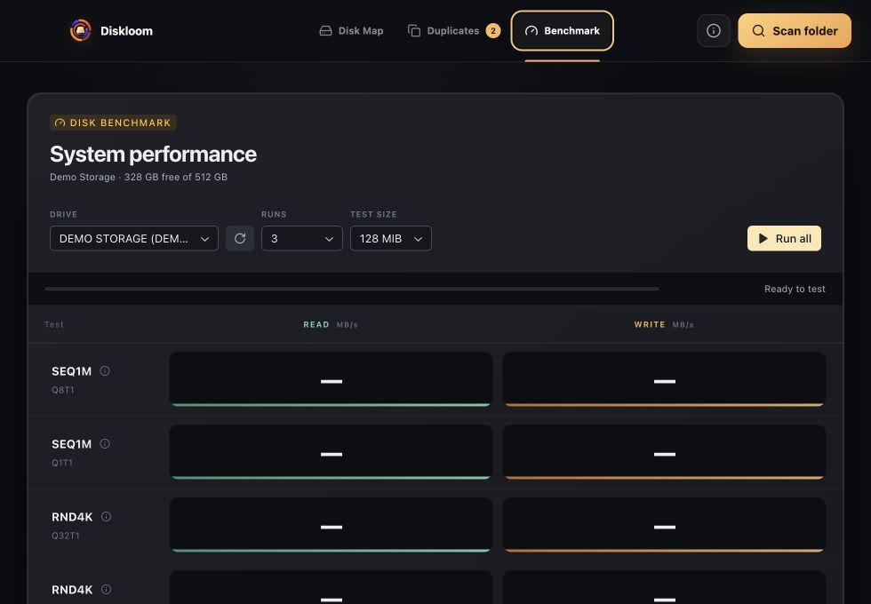

Good usability with material gaps in the product’s core visualization and trust-sensitive flows.
Executive summary
Strong foundation, moderate–high UX risk
The visual system and onboarding are already release-quality. Four high-priority findings affect comprehension, inclusive access, or user trust in destructive and performance workflows.
Accessibility, semantics, benchmark validity, cleanup trust
Narrow-window usability, scan feedback, visual accessibility
Clear value, privacy promise, and primary action
Bottom line: keep the visual direction. Focus the next release on meaning and safety: every color should communicate something true, every primary task should work without a mouse, benchmark caveats should appear before a run, and deletion recommendations should require an explicit opt-in.
Prioritized findings
What to fix first
Severity reflects impact and likelihood in the supported desktop experience, not implementation complexity.
01
High
The primary disk map is mouse-only
All 11 visible chart segments are clickable SVG paths, but none can receive keyboard focus or expose a name, size, or type to assistive technology.
Impact
Keyboard and screen-reader users cannot explore or drill into the product’s signature visualization. They can use the side table, but that is not a functional equivalent for navigating the hierarchy.
Recommendation
- Give segments button semantics, roving keyboard focus, and Enter/Space activation.
- Expose “name, type, size, percent of parent” through accessible labels.
- Offer a synchronized tree/list alternative that mirrors chart selection.
Evidence: browser focus inventory; src/Sunburst.tsx:73–85. The SVG has role="img" while path and center interactions rely on mouse events.
02
High
The legend describes an encoding the chart does not use
The legend says orange means folders and purple means files. In practice, colors identify top-level branches and are inherited by their descendants.
Impact
Users can make a false inference about what occupies space. This damages trust precisely where Diskloom should be helping people reason about their storage.
Recommendation
- Either encode file/folder type consistently or relabel the legend to explain branch colors and ring depth.
- Add persistent labels for the largest segments and a selection summary outside the SVG.
- Test the chart with mixed file and folder nodes at every depth.
Evidence: src/Sunburst.tsx:5, 23–40 assigns colors by depth/index; src/App.tsx:233–234 and src/styles.css:33–35 present a folder/file legend.
03
High
The default benchmark can produce cache-inflated results
A 128 MiB test is selected by default on a 16 GB system. Diskloom knows the test can be cached, but the warning is 9 px text below the results and below the fold at the minimum window size.
Impact
Users may treat an easy-to-run number as disk performance when it may partly reflect memory caching. This is a trust problem, not just an advanced-user caveat.
Recommendation
- Surface a prominent pre-run “cache may affect this test” state beside Test size.
- Recommend a safe preset based on memory, available space, expected duration, and platform behavior.
- Label completed results “cache-influenced” when the warning condition remains true.
Evidence: src/Benchmark.tsx:13–14 defaults to 3 runs / 128 MiB; 53 detects cache risk; 82 still enables Run all; 97 shows the caveat. src/styles.css:89 renders it at 9 px.
04
High
Duplicate cleanup hides scope and starts in a destructive state
The duplicates intro and results omit the scanned root. Once results load, every non-retained copy is selected for Trash automatically using an “oldest copy” heuristic.
Impact
A user switching between scans can lose context, while the enabled Trash action implies the product has already made the deletion decision. The confirmation dialog is strong, but arrives after this trust gap.
Recommendation
- Keep the root path visible in the intro, results summary, and confirmation.
- Start with zero files selected; offer “Select recommended copies” with a short explanation.
- Explain the retain heuristic and mark ambiguous groups for manual review.
Evidence: src/Duplicates.tsx:39–55 auto-selects every file except the heuristic keep; 106 and 109–110 omit rootPath; rootPath appears only during analysis at 103.
05
Medium
The minimum supported window compresses names and controls too far
At 980×680, the details panel narrows to 340 px and common folder names render as “Proje…”, “Down…”, and “Docu…” without a native title. Row actions measure only 24×28 and 28×28 px.
Impact
Similar prefixes become indistinguishable and small icon targets increase selection errors, particularly next to the destructive Trash action.
Recommendation
- Reduce fixed Size/Actions columns or allow the panel to resize.
- Add full-name tooltips and keep the row itself as the primary drill-in target.
- Use at least 36–40 px targets and separate Trash spatially from navigation.
Evidence: configured minWidth/minHeight is 980×680; browser measurement; src/styles.css:42–45. src/App.tsx:239–243 gives fixed 92 px and 86 px columns.
06
Medium
Long scans provide activity, not progress
The scan screen shows an animated disk, item count, current path, and Cancel. It does not show elapsed time, throughput, phase, or a clear explanation that total progress may be unknowable.
Impact
On large or slow volumes, users cannot judge whether the app is healthy or whether waiting is worthwhile. A changing path alone is hard to monitor.
Recommendation
- Show elapsed time and items per second.
- Label the state “Scanning — total size is discovered as we go” when percent complete is unavailable.
- Surface inaccessible-item count during the run if it changes.
Evidence: src/App.tsx:222 exposes item count, path, and Cancel only. The app already records duration and inaccessible counts in the completed result.
07
Medium
Critical microcopy is too faint, and reduced motion is incomplete
The chart hint and benchmark note measure about 3.42:1 and 3.37:1 contrast respectively, despite being only 9–10 px. Reduced-motion styling disables chart entry animation but not continuous scan/progress spinners.
Impact
Low-vision users may miss instructions and benchmark caveats, while motion-sensitive users still receive continuous rotation during the longest waits.
Recommendation
- Raise small-text contrast to at least 4.5:1 and avoid 9 px for consequential text.
- Apply reduced-motion handling to scanner orbit, loading spinners, and fades.
- Replace motion with a static progress mark when the preference is active.
Evidence: computed contrast from src/styles.css colors; src/styles.css:32, 55, 64, 70, and 89.
Visual evidence
What the walkthrough revealed
Screenshots were captured from the local demo build. No real files were moved or modified.





What is working
Keep these product qualities
Clear, confidence-building onboarding
The welcome screen says what Diskloom does, why it is private, and what to do next without over-explaining.
Responsible destructive-action copy
Trash confirmations state the item count or size, explain recoverability, and autofocus Cancel instead of the destructive action.
High-quality modal accessibility
Dialogs trap focus, respond to Escape, restore focus, mark the application inert, and use labelled/described relationships.
Useful duplicate comparison details
Paths, timestamps, sizes, “Keeping” states, group expansion, and reclaimable totals make manual review practical.
Consistent visual and interaction system
Navigation, panels, states, and accent colors create a coherent, focused utility rather than a generic admin interface.
Transparent privacy controls
The About screen explains analytics inputs and exclusions clearly, with equally understandable allow and decline actions.
Recommended roadmap
A practical order of operations
Sequence the work by user risk first, then polish. The effort labels are directional and should be validated against the implementation.
Correct the chart’s meaning
Fix or relabel the legend, add persistent segment labels/selection details, and document ring depth. This is the fastest trust win.
Make exploration keyboard-operable
Add accessible segment semantics and a synchronized hierarchical list. Verify with keyboard-only and a screen reader.
Guard benchmark interpretation
Move cache guidance beside the controls, recommend a preset, and mark affected results visibly.
Reset duplicate cleanup to review-first
Show scan root at every stage, start unselected, and turn the heuristic into an explicit “select recommended” action.
Strengthen minimum-window usability
Protect full names, increase icon target sizes, and test the configured 980×680 minimum as a first-class layout.
Improve wait states and visual accessibility
Add elapsed/rate feedback, raise microcopy contrast, and complete reduced-motion coverage.
Method and scope
How this audit was conducted
Flows reviewed
- First-run welcome and quick starts
- Folder scan entry and loading state
- Disk map exploration and details table
- Duplicate analysis, selection, and confirmation
- About/privacy controls
- Benchmark setup and results
Evidence
- Interactive local demo at 1280×720
- Configured minimum size at 980×680
- DOM, keyboard-focus, target-size, and overflow inspection
- Targeted contrast calculations
- React/CSS/Tauri source review
Audit lens
Task clarity, information architecture, system feedback, error prevention, destructive-action safety, accessibility, responsive behavior, trust, and visual semantics.
Limitations
This is a focused expert review, not a full WCAG conformance audit or usability study. Demo data was used; long scans, permission failures, screen-reader output, and real device performance should receive separate validation.